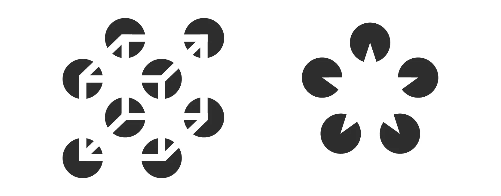

Las Leyes de la Gestalt en la percepción visual
Ley de proximidad
El principio de proximidad teoriza cómo tendemos a agrupar las formas o elementos visuales que están próximos entre sí. Para ello, dichos objetos deben compartir alguna de estas características en común: forma, color, tamaño o textura.
Por otro lado, si aumentamos el espacio entre los elementos podemos conseguir una sensación de separación, aún cuando los elementos tengan características en común.
En el ejemplo que podéis ver aquí comprobamos que la única diferencia entre la imagen de la izquierda o la imagen de la derecha es la proximidad de las líneas. Sin embargo, nuestra mente interpreta la imagen de la derecha como 3 grupos diferentes de elementos.
Ley de la semejanza
La ley de semejanza y similitud establece que independientemente de su posición percibiremos como parte de un grupo aquellos elementos con características similares, sea de forma, color, tamaño, textura.
Ley de continuidad
El ojo puede crear visualmente la continuidad de una línea. Este principio se basa en la idea de que el ojo humano va a seguir siempre el camino visual más suave, menos forzado y más coherente.
Por ejemplo, en estas ilustraciones que podéis ver bajo estas líneas, nuestro ojo va a querer seguir la línea recta o curva, de un extremo a otro, incluso aunque las líneas cambien de color a mitad de su recorrido. En este caso, tendemos a agrupar los elementos por la continuidad que percibe nuestro ojo.
El principio de Continuidad puede resultarnos de mucha utilidad, para por ejemplo, apuntar hacia un elemento del diseño o cuando necesitamos guiar la mirada de nuestro espectador.
Ley de cierre
Cuando percibimos una figura que no está cerrada o delimitada por líneas, nuestra mente tiende a transmitir una sensación de cierre o forma completa.
Según la Teoría de la Gestalt, las formas cerradas se perciben como formas más estables. Tendemos a cerrar o completar las formas abiertas, buscando otorgarles más estabilidad. Por eso, tendemos a agrupar esas formas individuales, como parte de un grupo, buscando componer una forma cerrada y completa.
El principio de cierre es una técnica bastante recurrida en diseño gráfico, especialmente en el diseño de logos. Al percibir un elemento como incompleto, nuestro cerebro trabaja rellenando la información que falta.
Figura y Fondo
El principio de Figura y Fondo es bastante similar al principio de cierre, porque aprovecha también la forma en que el cerebro procesa el espacio negativo. Este principio describe la tendencia que tiene el ojo humano a ver un objeto separado de lo que le rodea. Nuestra mente no es capaz de interpretar un mismo elemento como figura o como fondo al mismo tiempo.
Simetría y orden
Este principio, también conocido como prägnanz (que significa buena figura),teoriza que los elementos que cuentan con simetría y orden, son también percibidos como parte del mismo grupo.
A la izquierda podéis ver como la disposición de los elementos simétrica y ordenada, favorece a que los percibamos como parte de un grupo, mientras que a la derecha se han dispuesto los elementos de forma aleatoria.
Principio de Dirección Común

En los últimos años se habla también de este principio de dirección común. Esta última ley, teoriza que los objetos y elementos que parece que construyen un patrón o flujo en la misma dirección, son una vez mas percibidos como parte de un grupo.